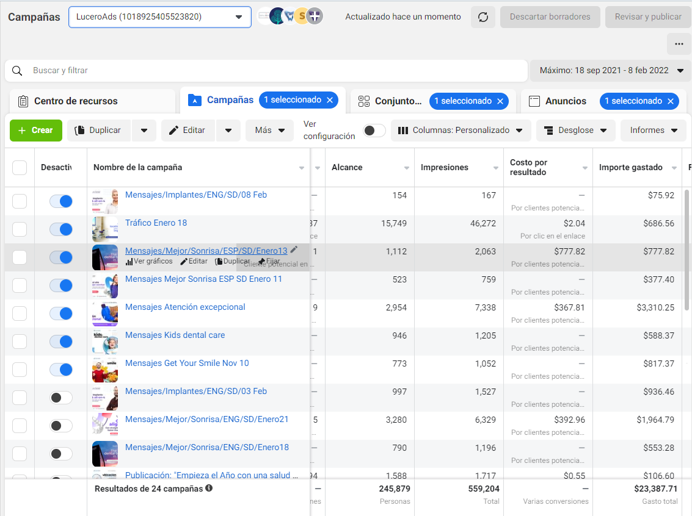
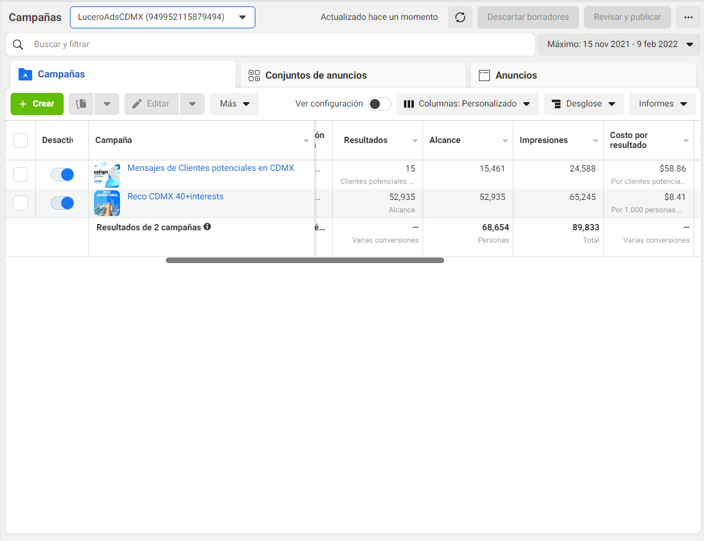

Ecommetrics
Juan M. Gonzalez Castillo
10 February 2022
PORTFOLIO

Portafolio de negocios de Lucero Dental Group
La consultoría de negocios de e-commetrics te resuelve el dilema digital
¿Cómo vender los siguientes servicios…
- Implantes
- Endodoncia
- Implantes
- Endodoncia
- Ortodoncia
- Odontopediatría
- Protesis
- Limpiezas
- Coronas
- Odontología General e Integral
- Odontología Cosmética
… en línea.

Siguiendo un plan y esquema de trabajo ya probado y estructurado, atravesamos las genialidades necesarias para construir o actualizar las plataformas digitales necesarias sostener un negocio en línea que, al final de su proceso, nos otorga una capacidad de operación sólida para el posicionamiento de un negocio.
Para dos consultorios dentales en dos ciudades distintas.
La estrategia se contruye para obtener clientes en ambientes digitales y convertirlos en pacientes.
Objetivos de la estrategia
Una capacidad digital para que ambos consultorios de Lucero Dental Group estén posicionados digitalmente en CDMX y Tijuana respectivamente.
Lucero Dental Group


Centro Radiológico Bosques
Incorporar la estrategia digital a Centro Radiológico Bosques iniciando con su +Branding

E-COMMERCE KICKOFF & ONBOARDING PACKAGE
- Logísitica de un calendario de citas y suministro de materiale
- Marketing para servicios de salud y atención al cliente
- Tecnología digital de vanguardia

INICIO del desarrollo del e-Commerce en Lucero Dental Group
Iniciamos contrato y factura fechada en agosto 7 de 2021
- Calendario & Esquema de trabajo E-COMMERCE PROPOSAL
- Acuerdo de consultoría de E-commetrics PRIVATE
- Digrama de GANTT para Lucero Dental Group ACTUAL GANTT
MVP + ORGANIC GROWTH
Integración de una consultoría de negocios en E-COMMERCE
- Requerimientos técnicos Lista
- GANTT milestones & next steps
- Webpage as MVP MVP Lucerodentalmexico.com
- Primeros reportes de FB & GOOGLE Strategic reports
- Artes y UX/UI Lucero Marketing
- Consultoría y entrenamiento
Arquitectura estatégica en conjunto
Una Mayor participación en la demanda es en el ECOMMERCE
¿Qué lo lograremos?
Desarrollamos un mapa estratégico que vincula los activos tangibles y los procesos críticos a la propuesta de valor al cliente y a los resultados financieros.
Administración elemental
- Planeación
- Organización
- Ejecución
- Control
Áreas empresariales
- Operaciones y Ventas
- Finanzas
- Comunicación y Marketing
- Tecnología y Desarrollo

Siguiendo metodologías de arquitecturas de sistemas y programación entregamos el Mapa de Flujo de vida de los pacientes clientes digitales y offline que sigue a la estrategia multicanal de META Facebook y Google para afianzar una operación de Marketing digital constante con resulados y orientada al crecimiento de la afluencia de pacientes en los consultorios de Lucero Dental Group.
MAPA DE FLUJO DEL PACIENTE

Sabemos que problemas multisectoriales requieren dirección multidepartamental.
Dirección orientada a equipos.
Garantía de satisfacción
META Facebook & GOOGLE STRATEGIES
A partir de las necesidades de la empresas digitales es que se puede diseñar un análisis al portafolio creado bajo una una estrategia para META Business FACEBOOK que permita acceder a un mayor reparto del mercado, es decir posicionarse en más búsquedas a través de las redes sociales más visitadas del mundo META FACEBOOK, Instagram, Messenger, Whatsapp y grupos en redes sociales además de aparecer y competir por la clasificación en GOOGLE mediante la implementación de keywords para el posicionamiento en intenciones de búsqueda en el navegador y buscador más utilizados del mundo.
positioning = Posicionamiento
Siendo impulsor de nuevas propuestas de valor en dos mercado digitales de la industria dental en dos geografías distintas se pretende robustecer la presencia digital y así el tráfico orgánico dentro del metaverso al cual entramos con las redes y la web 3.0. Nos integramo con el paciente a través de la tecnología.
Estrategia Multicanal Meta & Google
Resumen de la Estrategia en Meta (Facebook)
Creación de contenido para el perfil sobre:
1. Tratamientos
2. Ubicación
3. Promociones y descuentos
4. Personal e instalaciones
5. Otros
Creación de de contenido publicitario para LuceroAds
Enfocado en los siguientes elementos claves referentes al valor agregado que otorgamos como consultorio:
1. Indicar sus años de experiencia en EUA y que ahora se encuentra también en MX
2. Incluir fotografías de las doctoras con los servicios que se promocionan
3. Usar las fotos de la clínica para hablar del turismo dental en Tijuana usando logos de la plaza y del hotel

Meta Ads Historicos al 8 Feb 2022

Observamos alcances, impresiones Costo por Resultado (CPC) vs Total (Volumen)
MetaAds

META ADS Analytics
| Dato | Cantidad| |Número de Lead Conseguidos |34 | |Número de Conversaciones completas | 31| |Número de pacientes confirmados | 2|
SEO
Resumen SEO Meta & Google
Encuentra implantes en tijuana tratamientos dentales endodoncia root canal ortodoncia calidad y seguridad en cirugía y dental lucero en new city medial
Mira como poner implantes en tijuana tratamientos dentales endodoncia root canal ortodoncia calidad y seguridad en cirugía y dental lucero en new city medial
KERWORDS:
1. Implantes
2. Ortodoncia
3. Tijuana
4. dental
Blog Posts: GOOGLE ANALYTICS GOOGLE DASHBOARDS
Sugerencias:
- Medición a través de las 5 fuerzas de Porter y aplicar un BSC a largo plazo.
- LEADS
- WEBPAGE Inglés
- CRM strategy
DELIVERABLES
Customer Flow Map Flujo del paciente
Strategy Estategia digital
Go to GANTT: GANTT link
Go to Marketing files: DRIVE Marketing
Go to ecommerce proposal: Ecommerce proposal
Ver flujo del paciente: Flujo del paciente
Ver Estrategia Multicanal: Estategia digital
Ir a Glorasio de Definiciones: Glosario
PORTOLIO STATUS
| Cuenta | Estatus |
|---|---|
| LDG TIJUANA | 98% |
| LDG CDMX | 65% |
| C R BOSQUES | 40% |